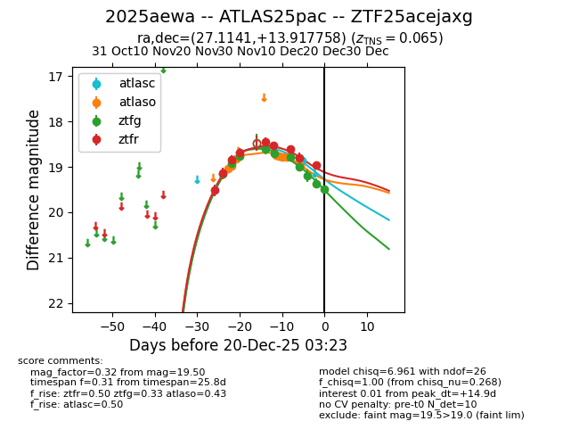
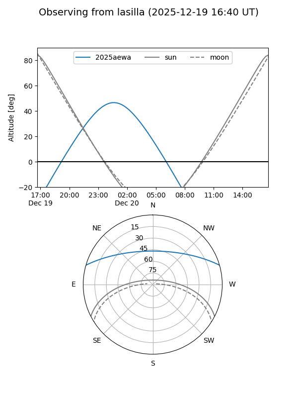
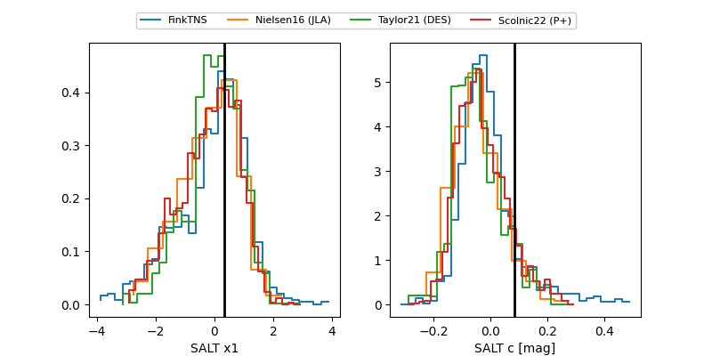

2025aewa
Target 2025aewa at 2025-12-18 11:52
Aliases and brokers:
FINK: fink-portal.org/ZTF25acejaxg
Lasair: lasair-ztf.lsst.ac.uk/objects/ZTF25acejaxg
ALeRCE: alerce.online/object/ZTF25acejaxg
TNS: wis-tns.org/object/2025aewa
YSE: ziggy.ucolick.org/yse/transient_detail/2025aewa
alt names
ZTF25acejaxg (ztf,fink_ztf)
2025aewa (tns,yse)
ATLAS25pac (atlas)
Coordinates:
equatorial (ra, dec) = 27.1141,+13.91776
equatorial (HMS+DMS) = 01:48:27.37,+13:55:03.93
galactic (l, b) = (143.3208,-46.68434)
Photometry
last atlasc=18.87, atlaso=18.99, ztfg=19.36, ztfr=18.96
1 atlasc, 8 atlaso, 9 ztfg, 9 ztfr detections
Lightcurve

Visibility


Additional plots
